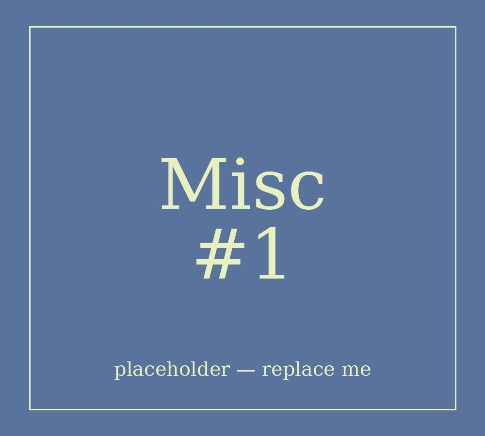

Hello, I'm Electra.
Welcome to my website! I am a 21 year old digital arts and cinema student, based in Greece. I dable in various mediums: digital art, charcoal, acrylics, 3d modeling, animation, even knitting, crochet, and a little doll customization! I'm able to draw in various styles, from realistic to more stylised and toony.
On this website you will find a showcase of various artworks of mine, university projects and personal works alike. I'm in the perliminary phases of writing my passion project, "Lost and Found", a graphic novel which I'll eventually upload here.
"Lost and Found" is a fantasy horror story set in a world where werecreatures are real and live amongst humans, till the apearace of a strange woman from knowhere changes everything. You will find artworks,concept art and the story of "Lost and Found" itself on this website.